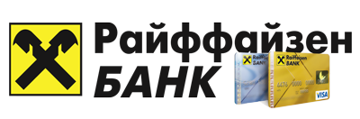
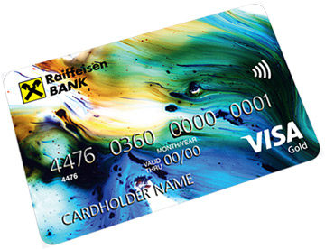
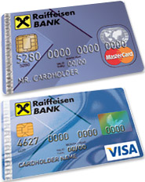

| Оформить карту онлайн за 3 минуты |
| Официальный сайт | raiffeisen.ru Открыть сайт |
| Сумма | до 600 тыс. рублей |
| Ставка | от 29% |
| Требования | Возраст от 25-60 лет. Гражданство РФ. Доход 25 тысяч рублей после налогообложения. |
| Преимущества | Для получения карты из документов нужны только копия паспорта и справка о доходах. |
| Способы получения | |
| Способы погашения | Кассы банка, Cash-in банкоматы, POS-терминал в подразденеии банка, внутрибанковским переводом, безналичный перевод; |
| Особенности | Подробный перечень доступен на сайте банка. |
| Регионы работы | |
Оформить карту
Кредитная карта Райффайзен «Все сразу»
Здесь доступны:
- лимит кредитования 600 тыс. рублей;
- 50 дней льготного беспроцентного периода пользования кредитом;
- проценты по кредиту, начиная с 29%;
- возможность получения карты в день обращения;
- cashback на все покупки 5% либо использовать накопленные балы (1 балл за 50 руб.) для получения различных вознаграждений;
- 500 подарочных баллов в день Рождения;
- бесплатный Интернет или мобильный банкинг;
- скидки от партнеров банка (ГрузовичкоФ (10%), UGG (10%), и др.)
- можно копить баллы и получать сертификаты на : покупки в Озон.ру, поездки на Yandex.Такси, мили программы S7 Priority,и пр. Оформить карту можно в течение нескольких минут в любом из отделений банке
В банке можно получить эксклюзивную кредитную карту Райффайзен с уникальным индивидуальным дизайном.
Кредитка «Наличная карта»
По этой кредитной карте Райффайзен банк предлагает:
- безоплатное снятие наличности в кассе и через банкоматы банка или партнеров;
- 50 дней льготного беспроцентного периода пользования деньгами;
- оплату любых товаров или услуг в разных странах мира;
- дополнительный выпуск к основной еще 2 карт;
- низкие комиссионные за расчеты на основной карте за год — 890 руб. (500 руб. на дополнительной);
- выгодные спецпредложения и разные скидки от партнеров банка;
- комфортные процентные ставки по кредиту, начиная с 29%;
- страхование держателя карты (программу финансовой защиты близких от неплатежей по кредиту).
В «Raiffisen Bank» могут выдать «Наличную карту» прямо при обращении клиента.
Тут доступны:
- беспроцентный период кредитования на 50 дней;
- плата по остатку кредита, начиная с 29%;
- безоплатное обслуживание (если за месяц обороты по карте превышают 8 тыс. рублей);
- ежемесячная комиссия 80 руб.;
- страховая финансовая защита держателя карты.
Есть возможность мгновенного выпуска карты «Покупки в плюс».
Золотая карта «Travel Revords»
С кредитной картой Райффайзен клиенты получают:
- лимит по кредиту до 600 тыс. рублей;
- 50 тыс. евро страховой суммы в СК «ERV»;
- экстренную выдачу наличности за рубежом (бесплатно);
- годовую процентную ставку за пользование кредитом от 29%;
- размер годовой комиссии 2990 руб.;
- льготный 50 дневный термин кредитования;
- начисление бесплатных миль (за каждую милю начисляется 30 руб.). При тратах в 25 тыс. руб. –500 миль, дополнительно 1000 миль держателю карты дарят на день рождения;
- выгодные условия от партнеров «Raiffisen» и спецпредложения от iGlobe.ru;
- пакеты услуг «Премиальный» или «Премиум Директ».
Еще есть возможность бронирования авиабилетов (380 компаний) или мест в отелях (100 тыс. гостиниц по всему миру), трансфера, страховки и визы или аренды автомобилей в разных странах; возможность заказа, ж/д билетов по России.
Austrian Airlines MasterCard World
Здесь можно получить:
- комфортные проценты по кредиту от 29% годовых;
- лимит кредитования до 600 тыс. рублей;
- страховку от компании «ERV» на 50 тыс. Евро.;
- годовой размер комиссии 2990 руб. за обслуживание;
- накопленные мили позволяют повысить класс заказанного перелета;
- премиальные перелеты как от Austrian Airlines, так и в других известных авиакомпаниях.
- различные виды товаров и услуг, которые предлагаются сервисом Miles&More.
MasterCard Gold Package
Держатели этой золотой кредитной карты Райффайзен получают:
- бесплатное обслуживание;
- лимит кредитования на 600 тыс. руб.;
- 50 дней беспроцентного льготного периода;
- возможность срочного получения наличных за рубежом (бесплатно);
- ставку кредитования от 29% годовых;
- страховку на 50 тыс. Евро. от СК «ERV»;
- привилегии и спецпредложения от партнеров банка;
- безоплатный СМС-банкинг.
Пользуясь разнообразными вариантами карт «Raiffisen Bank», можно получить отличные условия кредитования и высококачественного обслуживания.